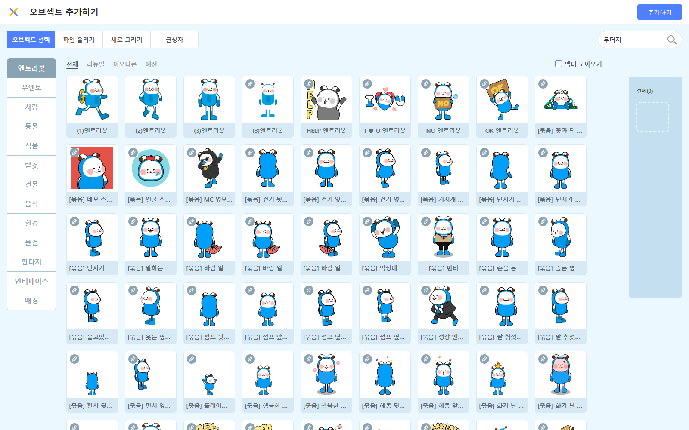

1. 게임 소개 — 두더지 잡기
"무작위로 튀어나오는 두더지를 망치로 클릭해 잡자. 제한시간 안에 몇 마리?"
사용할 오브젝트
- 두더지 — 복제 없이도 OK, 무작위 위치에 나타났다 숨음 (클릭해서 잡음)
- 망치 — 마우스 포인터를 따라 움직임 (없으면 손/공으로 대체)
- 배경 — 선택 (신호 받기·시간 변수를 여기에 붙이면 편함)
게임 ①(별 받기)에서 다룬 반복 · 무작위 · 조건 · 충돌 · 변수 위에, 이번에는 신호 보내기/받았을 때(오브젝트끼리 '대화')와 시간(남은시간) 변수 두 가지 새 개념을 얹습니다.
이 문서는 강사용입니다. 아래 블록 배열은 정답입니다 — 수업 전 한번 직접 만들어 보세요. 단, 수업 중에는 자녀에게 정답 블록을 보여주지 말고 AI 도움 규칙(아래)으로 유도하세요.
STEP 1 — 오브젝트·신호 준비
1-1. 기본 엔트리봇 삭제
좌측 하단 오브젝트 목록에서 "엔트리봇" 위에 마우스 올리기 → X 버튼 클릭.
1-2. 두더지 추가
- 오브젝트 목록 위쪽 "+ 오브젝트 추가하기" 클릭
- 검색창에 "두더지" 입력 → 선택 → 추가하기 (없으면 동물 아무거나)

1-3. 망치 추가
- 다시 "+ 오브젝트 추가하기" 클릭
- 검색창에 "망치" 입력 → 선택 → 추가하기 (없으면 손/공)

1-4. 신호 "잡힘" 만들기 ★ 이번 회차 새 작업
- 자료 카테고리로 이동 (블록 모음 왼쪽 목록)
- 아래로 내리면 "신호" 영역이 있습니다 → "신호 추가하기" 클릭
- 신호 이름: "잡힘" → 확인
1-5. (선택) 배경 추가
+ 오브젝트 추가하기 → "배경" 탭 → 원하는 배경 선택. (STEP 5·6의 신호 받기·시간 변수를 붙이기 좋음)
상단 우측 "저장하기" 클릭 → 작품 이름 "두더지 잡기". 한번 저장해두면 자동저장도 안전합니다.
블록 카테고리는 어디에? (참고)
아래 STEP에서 쓰는 카테고리 위치입니다. 막혔을 때만 참고하세요.


블록 모음 위쪽 검색창에 일부만 입력해도 찾아줍니다. 예: "신호", "클릭", "기다", "무작위", "말하기", "멈추기".
STEP 2 — 망치가 마우스를 따라 움직이기
⚠️ 오브젝트 목록에서 "망치" 클릭 (반드시 먼저!)
▶ 시작하기 → 마우스를 움직이면 망치가 포인터를 졸졸 따라옵니다.
STEP 3 — 두더지가 무작위로 나타났다 숨기
⚠️ 오브젝트 목록에서 "두더지" 클릭
- (0.5 부터 1.5 사이의 무작위 수), (-200~200 무작위) → 계산 카테고리의 무작위 수 블록
- ~ 초 기다리기 → 흐름 카테고리
- 모양 보이기 / 숨기기 → 생김새 카테고리
두더지는 잠깐만 보였다가 숨습니다(여기선 1초). 보이는 동안 클릭해야 잡을 수 있어 게임이 됩니다. 기다리는 시간을 줄이면 더 어려워집니다.
▶ 시작하기 → 두더지가 여기저기 무작위 위치에서 깜빡깜빡 나타났다 사라집니다 (아직 점수·잡기는 STEP 4에서).
STEP 4 — 두더지를 때리면 (신호 보내기)
⚠️ 같은 "두더지" 오브젝트의 코드 영역에 새 시작 블록으로 별도 흐름을 추가합니다.
게임 ①처럼 자료 → 변수 만들기로 "점수" 변수를 만들고, 시작 시 점수 를 0 (으)로 정하기로 한 번 초기화해 둡니다(아무 오브젝트의 시작 블록, 보통 배경에 한 곳만).
- 오브젝트를 클릭했을 때 → 시작 카테고리 (마우스 클릭이 아니라 이 오브젝트가 클릭된 때!)
- 망치 에 닿았는가? → 판단 카테고리 (드롭다운을 "망치"로 변경)
- 잡힘 신호 보내기 → 시작 카테고리 (STEP 1에서 신호를 만들었어야 보임!)
두더지가 보일 때 그 위에 마우스(=망치)가 있어야 클릭이 통합니다. 망치 에 닿았는가? 조건을 넣으면 "망치로 정확히 때린 것"만 인정됩니다. 잡은 두더지는 모양 숨기기로 즉시 사라지게 합니다.
STEP 5 — 신호 받기 (다른 오브젝트가 반응)
⚠️ 배경(또는 점수판) 오브젝트 클릭 — 두더지가 보낸 신호를 다른 오브젝트가 받습니다.
두더지(STEP 4)가 잡힘 신호 보내기로 "잡았어!"라고 외치면, 배경(여기 STEP 5)이 잡힘 신호를 받았을 때로 "잘했어!"라고 응답합니다. 두 오브젝트가 신호로 대화하는 것이 이번 회차의 새 개념입니다.
▶ 시작하기 → 두더지를 망치로 잡으면 점수가 오르고, 배경이 "잘했어!"라고 잠깐 말합니다.
STEP 6 — 시간 변수 (제한시간)
⚠️ 아무 오브젝트(보통 배경)에 붙입니다. 자료 → 변수 만들기로 "남은시간" 변수를 먼저 만드세요.
- 남은시간 을 30 (으)로 정하기, 남은시간 에 -1 만큼 더하기 → 자료 카테고리
- 남은시간 = 0 → 판단의 비교(=) 블록 + 자료의 남은시간 변수
- 모든 코드 멈추기 → 흐름 카테고리
1초 기다린 뒤 남은시간을 -1 하므로 30 → 29 → … → 0으로 줄어듭니다. 0이 되면 모든 코드 멈추기로 두더지·망치·시간 흐름이 전부 정지해 게임이 끝납니다.
▶ 시작하기 → 남은시간이 30부터 줄고, 그 안에 두더지를 잡아 점수를 올리며, 0이 되면 "끝!"과 함께 멈춥니다.
2. 신개념 포인트
① 신호 보내기 / 신호를 받았을 때 — 한 오브젝트가 잡힘 신호 보내기로 신호를 보내면, 다른 오브젝트가 잡힘 신호를 받았을 때로 반응합니다. 즉 오브젝트끼리 '대화'시키기입니다. (게임 ①은 한 오브젝트 안에서만 움직였지만, 여기선 여러 오브젝트가 서로 호출합니다.)
② 시간 변수 — 남은시간 변수로 제한시간을 만듭니다. 1초마다 -1 하고 0이 되면 게임을 끝냅니다. 변수를 "점점 줄여서 끝을 만드는" 새로운 쓰임입니다.
3. 자주 막히는 곳
"신호 보내기" 블록이 안 보임 → 신호를 먼저 만들지 않았기 때문. 자료 카테고리 아래 "신호" 영역에서 신호 "잡힘"을 먼저 만들어야 보내기·받았을 때 블록이 생깁니다.
두더지를 클릭해도 반응 없음 → 마우스를 클릭했을 때와 오브젝트를 클릭했을 때를 혼동. 두더지에는 "오브젝트를 클릭했을 때"를 써야 합니다.
두더지가 숨었는데도 점수가 오름 → 망치 에 닿았는가? 조건을 빠뜨려서 보이지 않을 때도 클릭이 통과됨. 닿음 판정 조건을 꼭 넣으세요.
배경이 "잘했어!"를 안 함 → 신호 받았을 때 블록을 엉뚱한 오브젝트(두더지 자신)에 붙였거나, 신호 이름이 "잡힘"이 아님.
시간이 안 멈춤 → 남은시간 = 0 비교 대신 부등호를 잘못 썼거나 모든 코드 멈추기 누락.
4. AI 도움 규칙 (3단계)
(1) 10분 혼자 생각 → (2) AI에게 힌트만 요청 → (3) 직접 수정 + 말로 설명
자녀가 막혀도 즉답하지 않기. "어디서 막혔는지 말로 설명해봐" → "그럼 어떤 블록이 필요할 것 같아?" 순서로 유도하세요.
- 좋은 질문 예: "엔트리에서 한 오브젝트가 다른 오브젝트에게 신호를 보내려면 어떤 블록이 필요해? 정답 말고 힌트만."
- 나쁜 질문 예: "두더지 게임 코드 알려줘."
완성 후 "이 블록이 왜 이렇게 동작하는지 말로 설명할 수 있는가?"를 꼭 확인하세요. 특히 "신호를 왜 만들었고, 누가 보내고 누가 받는지"를 설명하게 해보세요.
5. 변형 아이디어
자녀가 빨리 끝나거나 더 만들고 싶어할 때:
- 두더지 종류별 점수 차등 — 황금 두더지를 추가해 잡으면 점수 에 5 만큼 더하기.
- 점점 빨라지기 — 시간이 지날수록 두더지의 초 기다리기 값을 줄여 더 자주 등장하게.
- 잘못 치면 감점 — 폭탄/나쁜 두더지를 추가해 잡으면 점수 에 -1 만큼 더하기.
- 끝나면 결과 알리기 — 시간이 0이 될 때 점수에 따라 "최고!/좋아!/다음엔 더!" 다르게 말하기.
이런 변형도 AI에게 "어떤 블록을 추가해야 할까?"로 묻게 유도하세요.
참고 링크
- 엔트리 공식: https://playentry.org/
- 엔트리 매뉴얼: https://docs.playentry.org/
이 가이드는 Kay님이 한번 직접 따라 만들어본 후의 안정감을 위한 것. 신호로 오브젝트를 대화시키는 흐름을 손으로 한번 해보면 자녀가 어디서 막힐지 자연스럽게 보입니다.